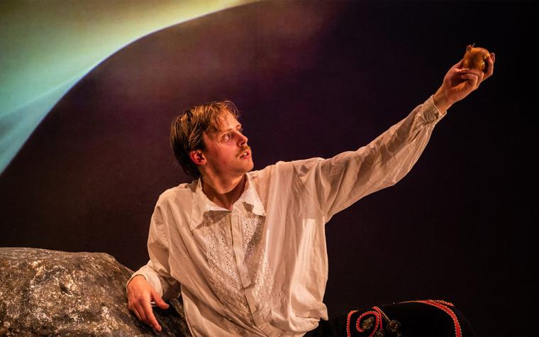
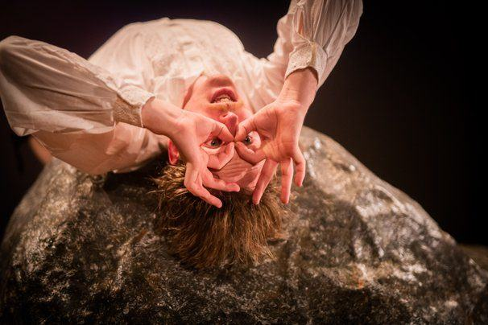
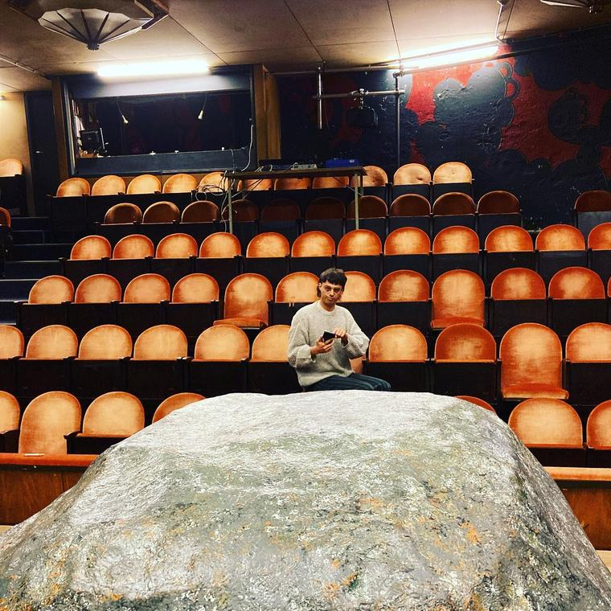
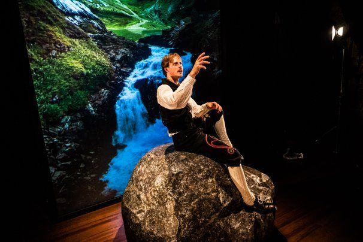
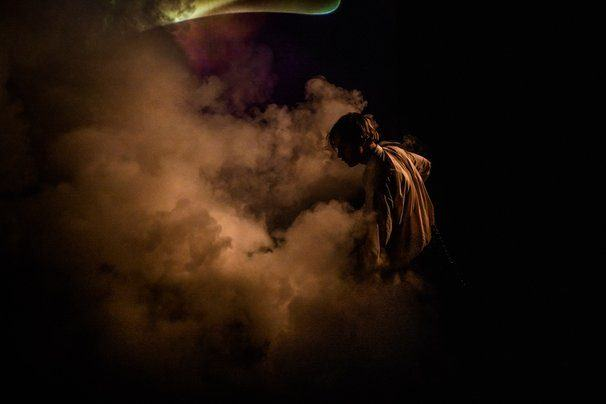
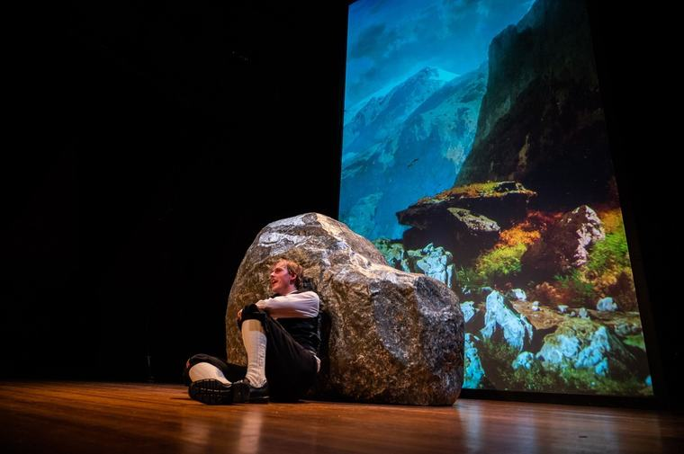

Peer Gynt (speelt David Westera)

Феерия лжи и мании величия. Antiklimax переписал монументальную пьесу Ибсена, в которой более шестидесяти персонажей, в монолог для одного одинокого лжеца — двадцатилетнего парня в поисках своей главной роли на мировой сцене. Кто ты на самом деле, когда лжёшь?
Спектакль родился как дипломная работа в Театральной академии Маастрихта (2020); в 2022 году новая версия вышла в Grand Theatre Groningen.
“Een spannende monoloog, virtuoos gespeeld ook.”
“Met een ongelofelijke levenslust, bravoure, fantasie, welbespraaktheid en vooral talent.”

Создатели
- концепция и текст
- Antiklimax
- в ролях
- David Westera
- режиссура
- Koen van Seuren
- драматургия
- Judith Blankenberg
- художник по свету (2020)
- Bogi Bakker
- копродукция
- Grand Theatre Groningen
- фото
- Niels “Knelis” Meijer
Показы
- 04/06/2022 · премьера, Grand Theatre Groningen
- гастроли 2022–2024 в т.ч. Het Nationale Theater Den Haag, Theater Kikker Utrecht, Theater Walhalla Rotterdam, De Lawei Drachten, тур Stormram Groningen/Friesland/Drenthe





фото: Niels “Knelis” Meijer